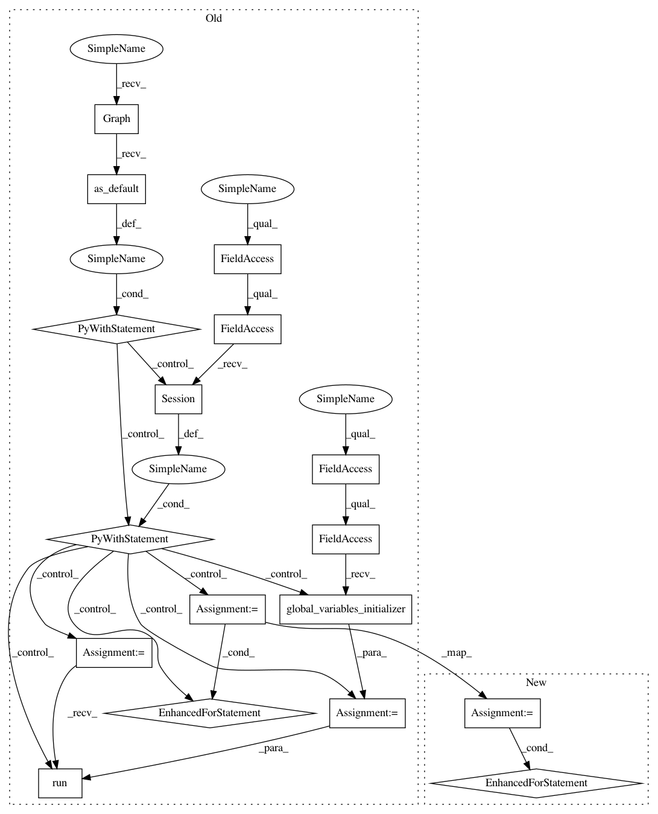

b3ef7ae9d3c1f6cfc9a202255ed2aa6b9d2aa791,research/delf/delf/python/examples/extract_features.py,,main,#Any#,65
Before Change
tf.io.gfile.makedirs(cmd_args.output_dir)
// Tell TensorFlow that the model will be built into the default Graph.
with tf.Graph().as_default():
with tf.compat.v1.Session() as sess:
init_op = tf.compat.v1.global_variables_initializer()
sess.run(init_op)
extractor_fn = extractor.MakeExtractor(sess, config)
start = time.clock()
for i in range(num_images):
// Write to log-info once in a while.
if i == 0:
print("Starting to extract DELF features from images...")
elif i % _STATUS_CHECK_ITERATIONS == 0:
elapsed = (time.clock() - start)
print(
f"Processing image {i} out of {num_images}, last "
f"{_STATUS_CHECK_ITERATIONS} images took {elapsed} seconds"
)
start = time.clock()
// If descriptor already exists, skip its computation.
out_desc_filename = os.path.splitext(os.path.basename(
image_paths[i]))[0] + _DELF_EXT
out_desc_fullpath = os.path.join(cmd_args.output_dir, out_desc_filename)
if tf.io.gfile.exists(out_desc_fullpath):
print(f"Skipping {image_paths[i]}")
continue
im = np.array(utils.RgbLoader(image_paths[i]))
// Extract and save features.
extracted_features = extractor_fn(im)
locations_out = extracted_features["local_features"]["locations"]
descriptors_out = extracted_features["local_features"]["descriptors"]
feature_scales_out = extracted_features["local_features"]["scales"]
attention_out = extracted_features["local_features"]["attention"]
feature_io.WriteToFile(out_desc_fullpath, locations_out,
feature_scales_out, descriptors_out,
attention_out)
if __name__ == "__main__":
parser = argparse.ArgumentParser()
parser.register("type", "bool", lambda v: v.lower() == "true")
parser.add_argument(
After Change
extractor_fn = extractor.MakeExtractor(config)
start = time.time()
for i in range(num_images):
// Report progress once in a while.
if i == 0:
print("Starting to extract DELF features from images...")
elif i % _STATUS_CHECK_ITERATIONS == 0:
elapsed = (time.time() - start)
print(
f"Processing image {i} out of {num_images}, last "
f"{_STATUS_CHECK_ITERATIONS} images took {elapsed} seconds"
)
start = time.time()
// If descriptor already exists, skip its computation.
out_desc_filename = os.path.splitext(os.path.basename(
image_paths[i]))[0] + _DELF_EXT
out_desc_fullpath = os.path.join(cmd_args.output_dir, out_desc_filename)
if tf.io.gfile.exists(out_desc_fullpath):
print(f"Skipping {image_paths[i]}")
continue
im = np.array(utils.RgbLoader(image_paths[i]))
// Extract and save features.
extracted_features = extractor_fn(im)
locations_out = extracted_features["local_features"]["locations"]
descriptors_out = extracted_features["local_features"]["descriptors"]
feature_scales_out = extracted_features["local_features"]["scales"]
attention_out = extracted_features["local_features"]["attention"]
feature_io.WriteToFile(out_desc_fullpath, locations_out, feature_scales_out,
descriptors_out, attention_out)
if __name__ == "__main__":
parser = argparse.ArgumentParser()
parser.register("type", "bool", lambda v: v.lower() == "true")
parser.add_argument(
In pattern: SUPERPATTERN
Frequency: 4
Non-data size: 17
Instances
Project Name: tensorflow/models
Commit Name: b3ef7ae9d3c1f6cfc9a202255ed2aa6b9d2aa791
Time: 2020-06-12
Author: dan.anghel@gmail.com
File Name: research/delf/delf/python/examples/extract_features.py
Class Name:
Method Name: main
Project Name: tensorflow/models
Commit Name: b3ef7ae9d3c1f6cfc9a202255ed2aa6b9d2aa791
Time: 2020-06-12
Author: dan.anghel@gmail.com
File Name: research/delf/delf/python/examples/extract_boxes.py
Class Name:
Method Name: main
Project Name: tensorflow/models
Commit Name: b3ef7ae9d3c1f6cfc9a202255ed2aa6b9d2aa791
Time: 2020-06-12
Author: dan.anghel@gmail.com
File Name: research/delf/delf/python/detect_to_retrieve/boxes_and_features_extraction.py
Class Name:
Method Name: ExtractBoxesAndFeaturesToFiles
Project Name: tensorflow/models
Commit Name: b3ef7ae9d3c1f6cfc9a202255ed2aa6b9d2aa791
Time: 2020-06-12
Author: dan.anghel@gmail.com
File Name: research/delf/delf/python/delg/extract_features.py
Class Name:
Method Name: main